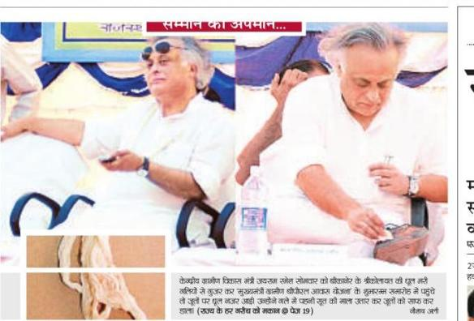

देश के एक मंत्री इस हद तक मूर्खता भी कर सकते हैं, और वो भी जयराम रमेश… पता नहीं था। गांधीजी के वे तथाकथित अनुयायी जो गांधीजी की तरफ उंगली करने पर तलवारें खींच लेते हैं……कुछ कहेंगे? 

फोटो राजस्थान पत्रिका से साभार
देश के एक मंत्री इस हद तक मूर्खता भी कर सकते हैं, और वो भी जयराम रमेश… पता नहीं था। गांधीजी के वे तथाकथित अनुयायी जो गांधीजी की तरफ उंगली करने पर तलवारें खींच लेते हैं……कुछ कहेंगे? 
फोटो राजस्थान पत्रिका से साभार
THE CONVERSATION, PRESERVED
Read-only. Names and wording belong to the original contributors.
Sarkaar, Joota mahga hoga soot se.. Neta logo ka koi imaan, dharm, philosohy kuchh nahi hota hai…
Shayad aapko aapki picchli post yaad hogi Sharad Joshi waali, congress ke 30 saal
🙂
🙂
अच्छा याद रखा आपने दीपक जी।
इनके लिए माला से ज्यादा जुटे मुल्यवान है. कृपया अगली बार माला की जगह जुते…. 🙂
शर्मनाक तक भी नहीं कहा जा सकता…
अगली बार इन्हें जूतों की माला ही पहनायी जानी चाहिये।
काश कि सूत की पवित्रता का लेश-मात्र अनुमान होता इन तथाकथित नेतागणों को…
ऐसे लोगो का सम्मान करना बंद कर देना चाहिए !
Agar minister aisa karenge to aam logon par bahut bura asar padega.Ye to bahut sharmnaak hai.
शर्म को भी शर्म आ गयी होगी जयराम की इस हरकत पे !
मेरे लिए निजी तौर पर खुशी की बात यह है कि इस फोटो को खींचने वाला फोटोग्राफर नौशाद अली मेरा दोस्त है… मुझे उस पर गर्व है…
सागर जी,
कृपया निरामिष ब्लॉग पर एक बार अवश्य पधारें, एक शाकाहार जागृति आन्दोलन को प्रोत्साहित करें
आपकी प्रतीक्षा रहेगी।
निरामिष: पश्चिम में प्रकाश – भारत के बाहर शाकाहार की परम्परा